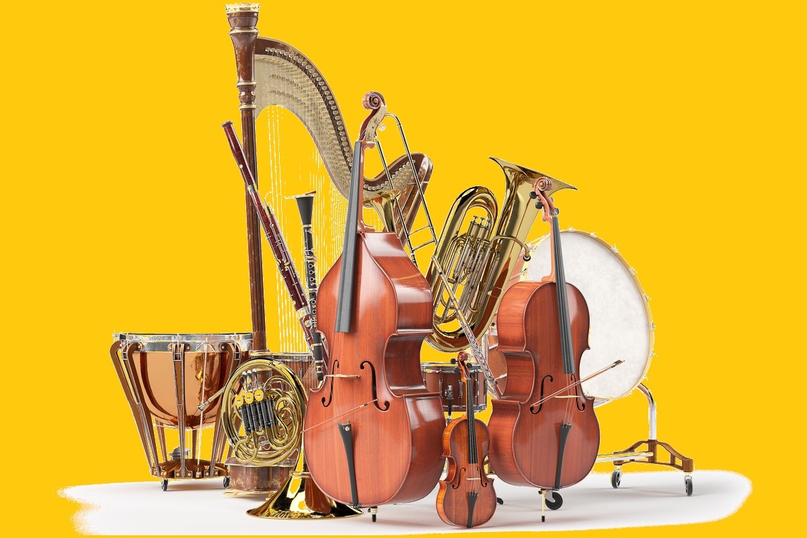
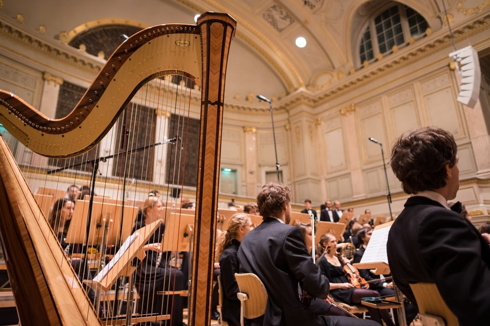
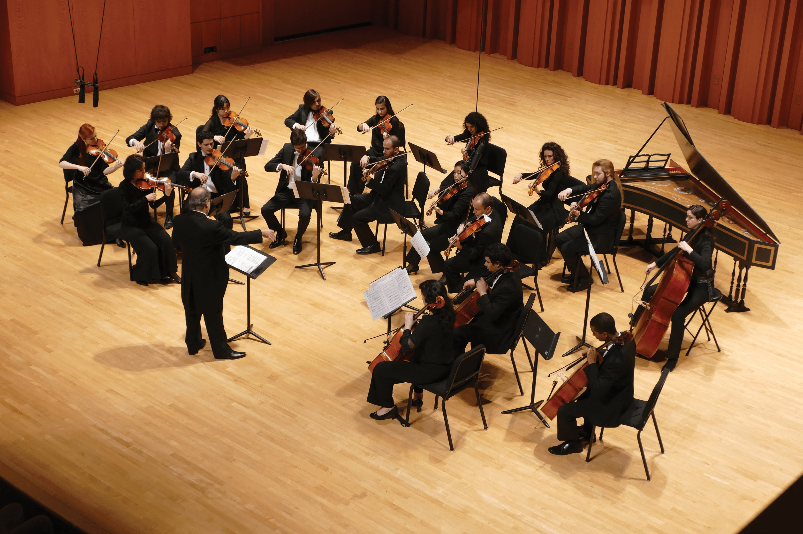
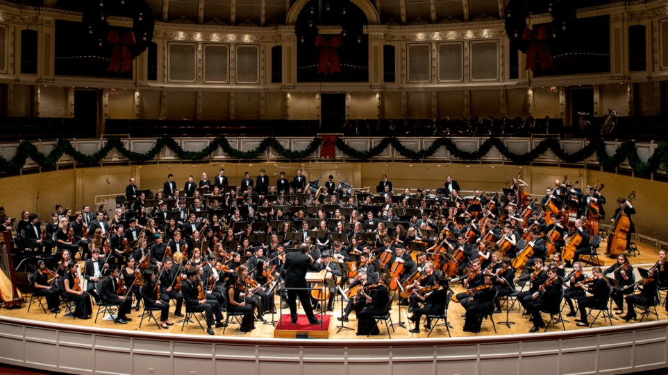

O orchestră simfonică este un ansamblu muzical instrumental de mari dimensiuni. Înțelesul cel mai răspândit al termenului este afiliat culturii europene, făcând referire la o instituție născută în acest spațiu în secolele XVII–XVIII. Ea s-a extins mai apoi în întreaga lume, ca parte a influenței culturii vest-europene.

Orchestra simfonica se naște la Veneția în jurul anului 1600. La început ea nu cuprindea decât instrumente cu coarde și arcuș (familia viorii) și un instrument de basso continuo (de obicei un clavecin). O orchestră din Dresda avea în 1731: 8 viori I, 7 viori II, 4 viole, 3 violoncele, 3 con 2 flaute, 5 oboaie, 5 fagoți, 2 corni, trompete (în număr variabil) și 2 clavecine (din care unul pentru basul continuu). O orchestră din perioada barocului muzical număra circa 20–25 de instrumentiști. În ansamblul lui Jean-Baptiste LULLY erau 40 de instrumentiști. Spre sfârșitul secolului XVIII (perioada clasică) orchestra simfonică va cunoaște o evoluție considerabilă (HAYDN și MOZART) când dispar din orchestră instrumentele cu coarde ciupite (cu excepția harpei) și intră în orchestră clarinetul și timpanul. BEETHOVEN: La timpan se adaugă alte percuții: toba mare, triunghiul, talgerele. La alămuri se adaugă trombonul (Simf. 5, 6, 9). Alămurile sunt mai bine valorificate. Alte inovații: cornul englez, contrafagotul, flautul piccolo. În secolul XIX orchestra simfonică ajunge la dimensiuni gigantice. Hector BERLIOZ – un adevărat virtuoz al orchestrei - renovează orchestrația. În Requiem el folosește 16 tromboane și 18 contrabași; în general orchestra lui BERLIOZ numără în jur de 150 de instrumentiști, sau chiar mai mulți. Richard WAGNER dezvoltă orchestra din muzica de operă (orchestrație foarte densă). Camille SAINT-SAËNS folosește xilofonul în Dans macabru (1874). Gustav MAHLER merge până la 10 trompete și percuții neobișnuite (talangă, bici).
Secolul XX aduce noi evoluții: Maurice RAVEL valorifică în mod original toate instrumentele orchestrei în faimosul Bolero, inclusiv saxofonul. În 1909 Arnold SCHÖNBERG compune Klangfarbenmelodie (melodia timbrelor).
Muzicologul american Neal Zaslaw remarcă un număr de aspecte definitorii pentru orchestra de tip european, începând din secolul al XVIII-lea (v. secțiunea Lectură suplimentară):
Față de dirijor, instrumentele cu coarde se află poziționate chiar în fața acestuia, pe rînduri, de la stînga la dreapta. Urmează instrumentele de suflat, în spatele celor cu coarde și apoi, în spatele acestora cele de percuție. Instrumentele de suflat din alamă au o sonoritate foarte puternică, de asemenea cele de percuție. De aceea ele se folosesc în număr mai redus față de instrumentele de suflat din lemn și instrumentele cu coarde.
Orchestra este clasificată în două categorii, în funcție de numărul de muzicieni. Orchestra de cameră are 50 sau mai puțini muzicieni, iar orchestra simfonică, ori filarmonică, 70 sau chiar 100 de oameni, ținându-se cont de lucrarea cântată.

